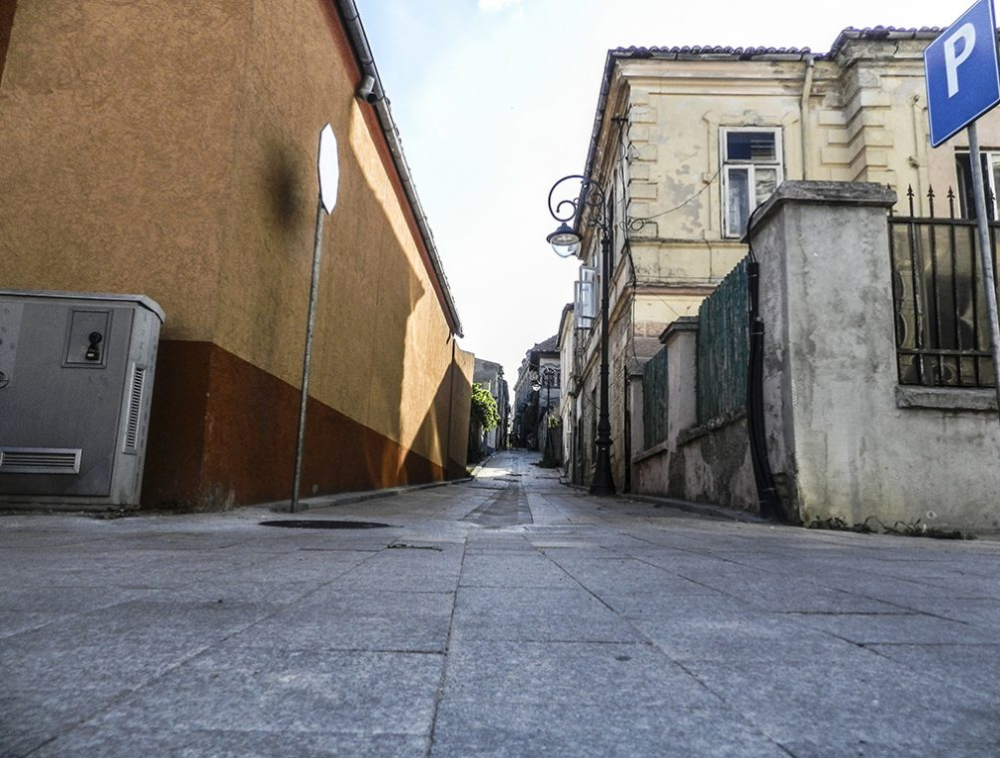
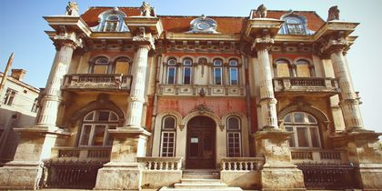
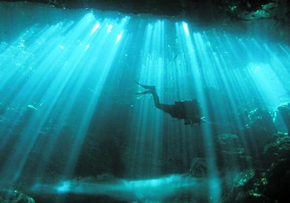
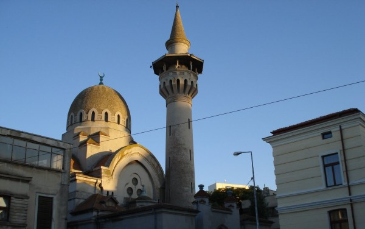

Stradela Vântului, învăluită în legende și ghemuită între bijuterii arhitectonice ruinate

Casa cu lei, imobilul care a declanșat pasiunea de-o viață a celui mai mare colecționar român de artă, Krikor Zambaccian

Arheologia subacvatică va scoate la lumină artefactele din Marea Negră

Carol I, moscheea construită la cererea regelui
LECTURA PLACUTA!